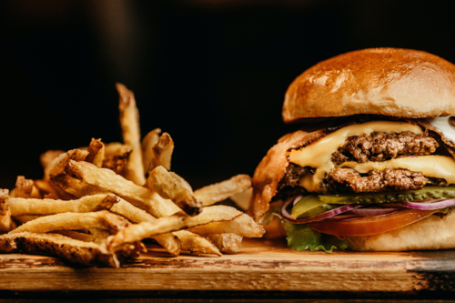

Restaurant Description
Come grab a burger and hang out with your friends on our outdoor patio. There's nothing better than good food with your friends while taking in an amazing view of the front range!
We have many local beers on tap as well as hard ciders and localally distilled whiskeys and gins. Flights are available as well!